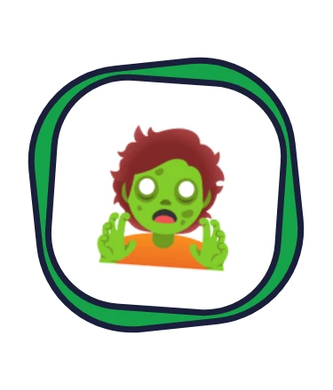

회사에 좀비가 나타났다
평범한 월요일 아침, 로비에서 비명이 들린다.
12장면 속 내 선택으로 알아보는 생존 유형
✅ 12장면 · 예상 소요시간 약 2분
✅ 오전 9시부터 오후 6시까지, 하루를 따라가는 이야기형 테스트
✅ 결과는 생존 유형 6가지 중 하나 (같이 살아남기 좋은 동료까지)
📖 위기에서는 평소의 내가 나옵니다
좀비 영화가 재밌는 건 좀비 때문만이 아니에요. 평범한 사람들이 극한 상황에서 어떻게 달라지는지를 보는 재미가 크죠. 누군가는 사람을 모으고, 누군가는 혼자 길을 찾고, 누군가는 조용히 숨습니다. 이 테스트는 회사라는 익숙한 공간에 그 상황을 옮겨 놓고, 12번의 선택으로 나의 생존 방식을 살펴봐요.
여섯 가지 생존 방식
재난을 다룬 이야기에는 비슷한 역할이 되풀이해서 나와요. 방향을 정하는 사람, 먼저 가 보는 사람, 도구를 만드는 사람, 사람을 돌보는 사람, 계획을 짜는 사람, 그리고 혼자 살아남는 사람. 어느 하나가 정답인 게 아니라 여섯이 다 있어야 팀이 살아남습니다. 반장만 열두 명이면 싸우다 끝나고, 조용한 생존자만 열두 명이면 아무도 문을 안 열어요.
왜 하필 회사일까
회사는 서로 잘 모르는 사람들이 좁은 공간에서 같은 문제를 풀어야 하는 곳이에요. 마감, 장애, 갑작스러운 조직 변경 같은 일이 터지면 평소 회의에서는 안 보이던 모습이 드러나죠. 그래서 결과를 읽을 때 "위기에서 드러나는 것"과 "평소 회사에서는"을 나란히 적어 두었어요. 좀비는 안 와도 월요일은 오니까요.
결과를 이렇게 읽어보세요
결과 화면에는 내가 고른 답이 여섯 유형에 어떻게 나뉘었는지 막대로 나와요. 1등과 2등이 비슷하다면 상황에 따라 역할을 바꾸는 사람이라는 뜻이에요. 팀 동료와 같이 해 보면 더 재밌습니다. 서로 다른 유형이 나왔다면, 실제로 일이 터졌을 때 누가 무엇을 맡을지 미리 알게 되는 셈이에요.
자주 묻는 질문
무서운 장면이 나오나요?
아니요. 글로만 진행되고 잔인한 묘사는 없어요. 좀비보다 회의실 분위기가 더 무서울 수 있습니다.
'조용한 생존자'가 나왔는데 이기적인 건가요?
그렇지 않아요. 불필요한 위험을 지지 않는 건 분명한 생존 능력이에요. 다만 본 것을 한마디만 나눠 주면 팀 전체가 덕을 본다는 점을 결과에 함께 적어 두었습니다.
다시 하면 결과가 달라지나요?
같은 답을 고르면 같은 결과가 나와요. 다른 선택을 해 보면 내가 가진 두 번째 생존 방식도 볼 수 있습니다.
🧾 나올 수 있는 결과 6가지
- 📣 대피 반장 — 사람부터 모아 줄 세우는 현장 지휘관
- 🔦 정찰병 — 남들이 망설일 때 먼저 문을 여는 사람
- 🛠️ 탕비실 맥가이버 — 복합기와 우산으로 방벽을 만드는 손
- 🩹 구급상자 담당 — 겁먹은 사람 옆에 제일 먼저 앉는 사람
- 📋 화이트보드 참모 — 비상구 두 곳과 예비 경로까지 그리는 머리
- 🤫 조용한 생존자 — 아무도 모르게 끝까지 살아남는 사람
⚠️ 이 테스트는 재미로 즐기는 콘텐츠이며 전문적인 심리 진단이 아니에요.